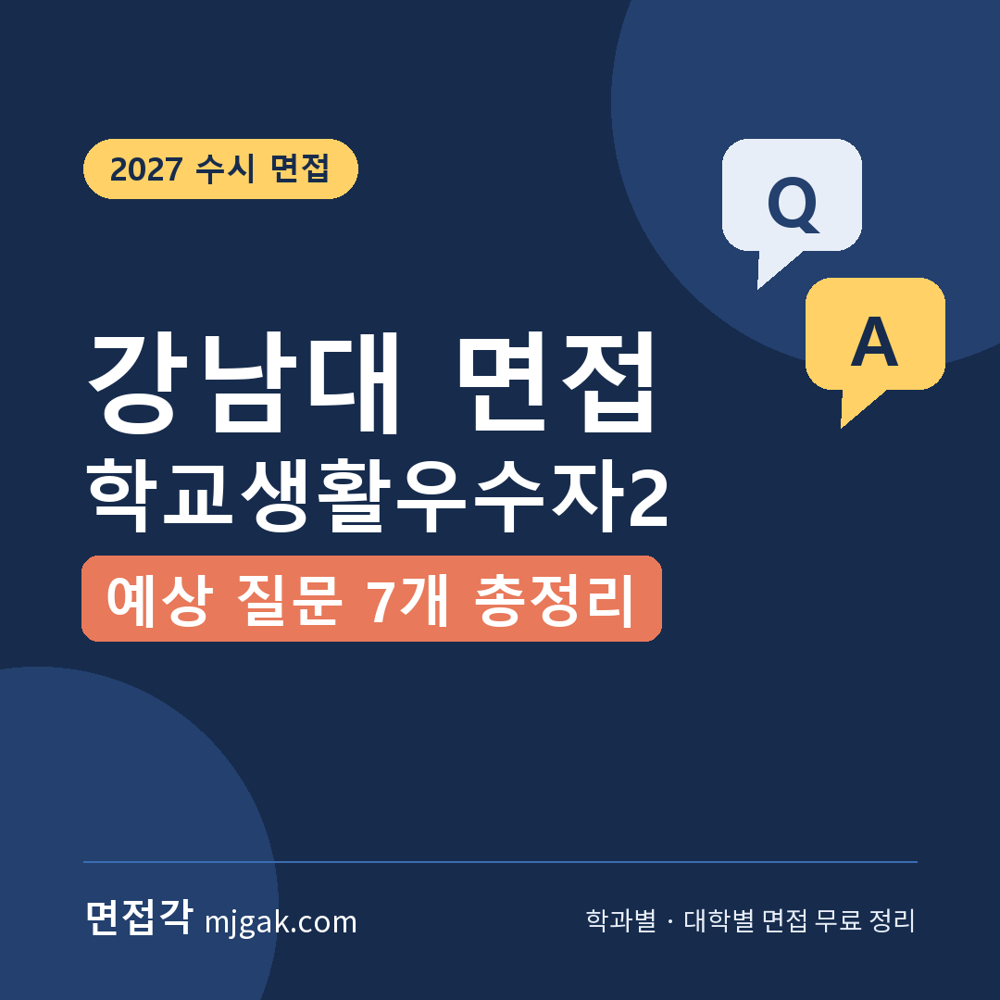
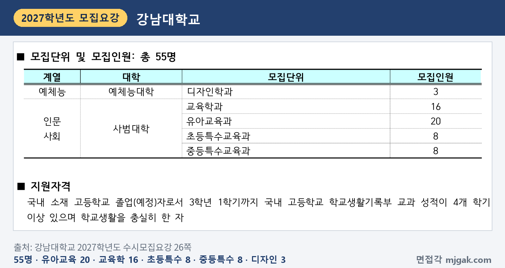
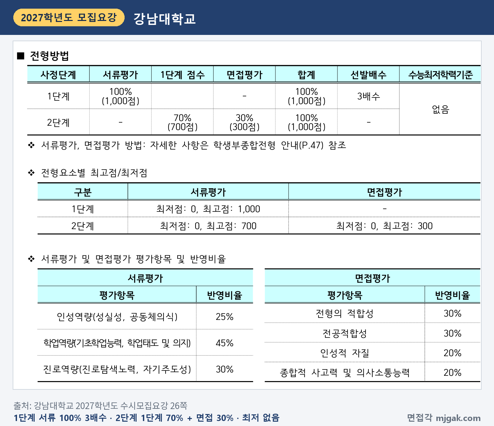
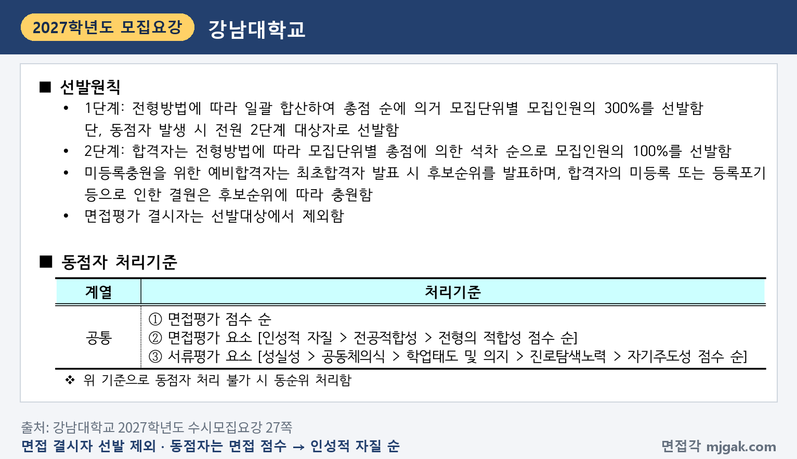
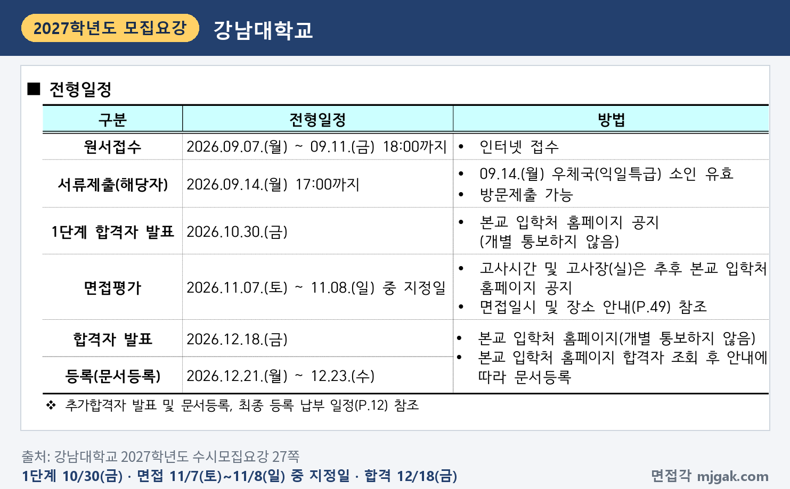
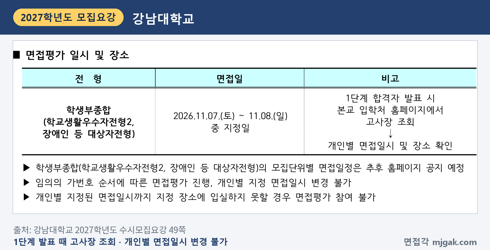
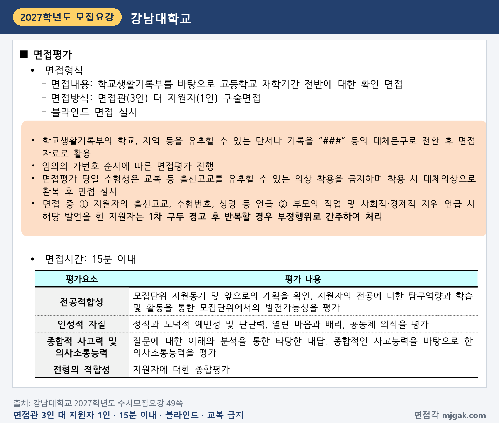
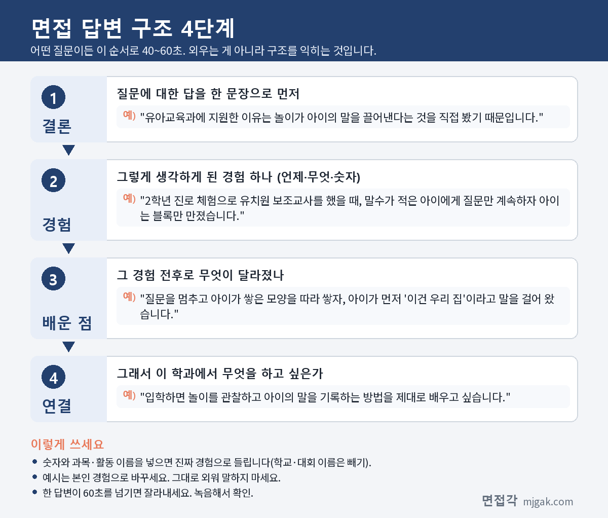
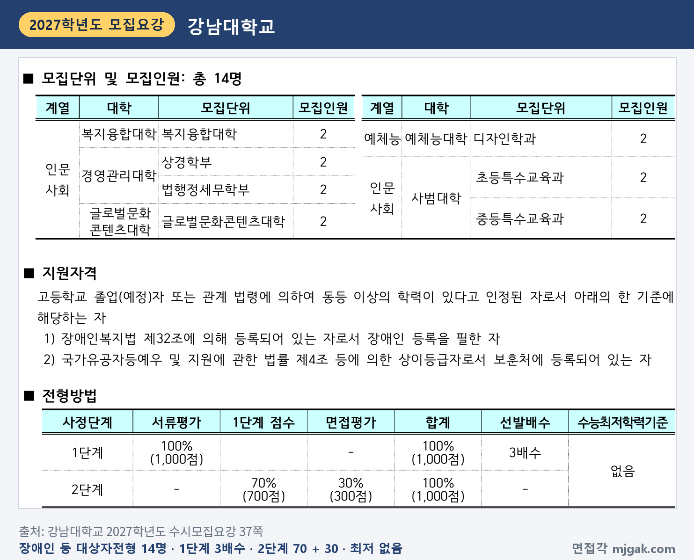

Ctrl+V (서식 유지됨)제목
본문 (이 영역 전체가 복사됩니다)
📷 여기에 이미지 넣기 — 썸네일 — thumb-kangnam.png (대표 이미지로 지정)
강남대 학교생활우수자전형2에서 먼저 챙길 것은 날짜입니다. 1단계 합격자 발표는 10월 30일(금)이고, 면접은 11월 7일(토)~8일(일) 중 지정일입니다. 수능(11월 19일 목요일)보다 앞이라 면접 준비와 수능 공부가 겹칩니다. 2단계는 1단계 성적 70%와 면접 30%를 합산하고, 면접은 면접관 3명이 지원자 1명을 15분 이내로 보는 블라인드 면접입니다. 수능최저학력기준은 없습니다. 이 글은 강남대학교 2027학년도 수시모집요강을 바탕으로 전형 방법과 일정, 면접 방식, 예상 질문 7개, 준비 순서를 정리하고, 같은 기간에 면접을 보는 장애인 등 대상자전형은 따로 묶었습니다. 유아교육과·교육학과·초등특수교육과·중등특수교육과·디자인학과에 이 전형으로 지원한 고3과 재수생이 읽으시면 됩니다.
1. 학교생활우수자전형2, 2027학년도에는 어떻게 보나
학교생활우수자전형2는 학생부종합전형으로 55명을 뽑습니다. 사범대학 유아교육과 20명, 교육학과 16명, 초등특수교육과 8명, 중등특수교육과 8명, 예체능대학 디자인학과 3명입니다(26쪽). 지원자격은 국내 소재 고등학교 졸업(예정)자로서 3학년 1학기까지 국내 고등학교 학교생활기록부 교과 성적이 4개 학기 이상 있으며 학교생활을 충실히 한 자입니다(26쪽). 모집요강의 2027학년도 주요 변경사항(4쪽)은 체육학과에 관한 것뿐이고 이 전형 항목은 없습니다.
📷 여기에 이미지 넣기 — 캡처 1 — 강남대학교 2027학년도 수시모집요강 26쪽: kangnam-2027-s2-units.png
전형 방법은 1단계에서 서류평가 100%(1,000점)로 모집인원의 3배수를 뽑고, 2단계에서 1단계 점수 70%(700점)와 면접평가 30%(300점)를 합산합니다. 수능최저학력기준은 없습니다(26쪽). 디자인학과도 이 전형에서는 서류와 면접으로만 뽑고, 전형 방법에 실기는 없습니다. 이 글에서 모집인원에 3을 곱해 계산하면 1단계 합격 규모는 유아교육과 60명, 교육학과 48명, 초등·중등특수교육과 각 24명, 디자인학과 9명입니다. 1단계 동점자는 전원 2단계 대상자로 뽑으므로(27쪽) 실제 인원은 이보다 많을 수 있습니다.
📷 여기에 이미지 넣기 — 캡처 2 — 강남대학교 2027학년도 수시모집요강 26쪽: kangnam-2027-s2-method.png
면접평가에 결시하면 선발대상에서 제외됩니다. 최종 동점자는 ① 면접평가 점수, ② 면접 요소(인성적 자질 > 전공적합성 > 전형의 적합성), ③ 서류 요소(성실성 > 공동체의식 > 학업태도 및 의지 > 진로탐색노력 > 자기주도성) 순으로 가립니다(27쪽). 학교폭력 조치사항은 이 전형에서 서류와 면접 평가의 인성역량 정성평가로 반영합니다(58쪽). 전형료는 95,000원이고, 1단계 불합격자에게는 면접평가료 30,000원을 돌려줍니다(63·64쪽).
📷 여기에 이미지 넣기 — 캡처 3 — 강남대학교 2027학년도 수시모집요강 27쪽: kangnam-2027-s2-tie.png
2. 언제 보나: 10월 30일 1단계 발표, 수능 전 11월 7일~8일 면접
일정은 날짜순으로 이렇습니다(27쪽).
- 10월 30일(금): 1단계 합격자 발표, 본교 입학처 홈페이지 공지(개별 통보하지 않음)
- 11월 7일(토) ~ 8일(일) 중 지정일: 면접평가
- 11월 19일(목): 수능
- 12월 18일(금): 합격자 발표, 입학처 홈페이지(개별 통보하지 않음)
- 12월 21일(월) ~ 23일(수): 등록(문서등록)
1단계 발표에서 면접까지는 8~9일, 면접에서 수능까지는 11~12일입니다(이 글에서 계산한 값). 추가합격 발표는 12월 24일(목) 1차부터 시작합니다(8·12쪽).
📷 여기에 이미지 넣기 — 캡처 4 — 강남대학교 2027학년도 수시모집요강 27쪽: kangnam-2027-s2-schedule.png
내 면접 날짜는 1단계 합격자 발표 때 입학처 홈페이지에서 고사장을 조회해 개인별 면접일시와 장소로 확인합니다. 모집단위별 면접일정은 추후 홈페이지에 공지할 예정입니다. 개인별 지정 면접일시는 바꿀 수 없고, 지정 시각까지 입실하지 못하면 면접평가에 참여할 수 없습니다(49쪽).
📷 여기에 이미지 넣기 — 캡처 5 — 강남대학교 2027학년도 수시모집요강 49쪽: kangnam-2027-s2-date.png
3. 면접은 어떻게 보나
면접내용은 "학교생활기록부를 바탕으로 고등학교 재학기간 전반에 대한 확인 면접"이고, 면접관 3인 대 지원자 1인 구술면접으로 15분 이내입니다(49쪽). 평가요소와 반영비율은 다음과 같습니다(26·49쪽).
- 전형의 적합성 30%: 지원자에 대한 종합평가
- 전공적합성 30%: 모집단위 지원동기와 앞으로의 계획, 전공 탐구역량, 학습·활동을 통한 모집단위에서의 발전가능성
- 인성적 자질 20%: 정직과 도덕적 예민성 및 판단력, 열린 마음과 배려, 공동체 의식
- 종합적 사고력 및 의사소통능력 20%: 질문에 대한 이해와 분석을 통한 타당한 대답, 종합적인 사고능력을 바탕으로 한 의사소통능력
면접 300점에 30%를 곱하면 전형의 적합성과 전공적합성이 각각 90점, 나머지 두 요소가 각각 60점에 해당합니다(이 글에서 계산한 값).
블라인드 면접 규정도 같이 보세요(47·49쪽). 학생부의 학교·지역을 짐작할 수 있는 기록은 "###"으로 바꿔 면접 자료로 쓰고, 면접은 임의의 가번호 순서로 진행합니다. 교복 등 출신고교를 짐작할 수 있는 옷은 입을 수 없고, 입고 오면 대체의상으로 갈아입은 뒤 면접을 봅니다. 면접 중 출신고교·수험번호·성명을 말하거나 부모의 직업과 사회·경제적 지위를 말하면 1차 구두 경고를 받고, 반복하면 부정행위로 처리합니다.
📷 여기에 이미지 넣기 — 캡처 6 — 강남대학교 2027학년도 수시모집요강 49쪽: kangnam-2027-s2-interview.png
서류평가 기준도 면접 준비에 쓰입니다. 학교생활기록부를 바탕으로 다수의 입학사정관이 정성평가하고, 인성역량 25%(성실성, 공동체의식), 학업역량 45%(기초학업능력, 학업태도 및 의지), 진로역량 30%(진로탐색노력, 자기주도성)를 반영합니다(26·48쪽). 면접이 그 학생부를 확인하는 자리이니, 이 세 역량에 해당하는 활동을 학생부에서 미리 골라 두세요.
4. 평가 요소에서 나올 예상 질문 7개와 답변법
강남대는 모집요강에 면접 질문 예시를 공개하지 않았습니다. 아래 7개는 49쪽 평가요소로 정리한 예상 질문이고, 괄호의 평가 요소는 이 글에서 연결한 것입니다. 예시 답변은 모집단위를 바꿔 가며 쓴 가상의 예시이니 본인 학생부의 활동으로 바꾸세요.
▶ 질문 1. 이 모집단위에 지원한 이유와 입학 후 계획을 말해 보세요. (전공적합성: 지원동기 및 앞으로의 계획)
왜 묻나: 전공적합성(30%)의 평가 내용 첫머리가 "모집단위 지원동기 및 앞으로의 계획을 확인"입니다.
답변 구조: 지원 이유 한 문장 → 그 이유가 된 장면 → 그 장면에서 바꾼 것 → 입학 후 배울 것.
답변 예시 (유아교육과):
"유아교육과에 지원한 이유는 놀이가 아이의 말을 끌어낸다는 것을 직접 봤기 때문입니다. 2학년 진로 체험으로 유치원 보조교사를 했을 때, 말수가 적은 아이에게 질문만 계속하자 아이는 블록만 만졌습니다. 질문을 멈추고 아이가 쌓은 모양을 따라 쌓자, 아이가 먼저 '이건 우리 집'이라고 말을 걸어 왔습니다. 입학하면 놀이를 관찰하고 아이의 말을 기록하는 방법을 제대로 배우고 싶습니다."
주의: "아이들이 좋아서"로 끝내지 말고, 내가 바꾼 행동 하나를 넣으세요.
▶ 질문 2. 학생부의 탐구 활동 가운데 지원 학과와 이어지는 것을 설명해 보세요. (전공적합성: 전공에 대한 탐구역량)
왜 묻나: 같은 항목의 "전공에 대한 탐구역량과 학습 및 활동을 통한 모집단위에서의 발전가능성"을 학생부 탐구로 묻는 질문입니다.
답변 구조: 탐구 주제 한 문장 → 처음 방법의 한계 → 바꾼 방법 → 학과에서 더 배울 것.
답변 예시 (교육학과):
"교육학과와 이어지는 탐구는 2학년 통합사회 시간에 한 '쉬는 시간 휴대전화 사용과 수업 집중' 설문입니다. 처음에는 '집중이 잘 되나요' 한 문항만 물어서 우리 반 서른 명의 답이 거의 같았습니다. 그래서 수업 직후 기억나는 내용을 세 줄씩 적게 하고, 휴대전화를 쓴 날과 쓰지 않은 날을 비교했습니다. 교육학과에서 배움을 제대로 측정하는 연구 방법을 배우고 싶습니다."
주의: 결론을 부풀리지 마세요. 작은 탐구라도 방법을 바꾼 과정이 드러나면 됩니다.
▶ 질문 3. 학생부에서 가장 오래 이어 온 활동은 무엇이고, 그사이 무엇이 달라졌나요? (전형의 적합성, 면접내용: 고교 재학기간 전반 확인)
왜 묻나: 면접내용이 "고등학교 재학기간 전반에 대한 확인 면접"입니다. 한 활동을 1학년부터 따라가며 묻는 질문을 예상할 수 있습니다. 전형의 적합성(30%)은 모집요강에 "지원자에 대한 종합평가"라고만 적혀 있어, 이 질문을 그 항목에 연결한 것은 이 글의 해석입니다.
답변 구조: 활동과 기간 → 1학년 때 모습 → 학년이 올라가며 바꾼 것 → 지금 하고 싶은 것.
답변 예시 (중등특수교육과):
"가장 오래 이어 온 활동은 1학년부터 한 교내 수어 동아리입니다. 1학년 때는 단어를 외우는 데 그쳤는데, 2학년 학교 행사에서 노래를 수어로 옮겨 보니 손 모양보다 표정이 뜻을 더 많이 전한다는 것을 알았습니다. 3학년에는 후배들에게 표정부터 연습하게 했습니다. 중등특수교육과에서 소통 방법이 다른 학생에게 맞는 수업을 배우고 싶습니다."
주의: 학교 행사 이름, 지역 이름은 빼고 "학교 행사"처럼 말하세요.
📷 여기에 이미지 넣기 — 이미지 1 — 제미나이 생성: 늦가을 햇살이 드는 하늘색 커튼의 캠퍼스 라운지에서 그림책·나무 블록·그림 카드·색연필과 스케치북·작은 화이트보드 옆에서 답하는 여학생(실사), 강남대 상징 교화 백합·상징색 하늘색 / "제미나이 프롬프트 1"
(AI로 만든 이미지로, 실제 캠퍼스와 다를 수 있습니다)
▶ 질문 4. 옳다고 생각한 일을 지키기 어려웠던 경험이 있나요? (인성적 자질: 정직과 도덕적 예민성 및 판단력)
왜 묻나: 인성적 자질(20%)의 첫 평가 내용이 "정직과 도덕적 예민성 및 판단력"입니다. 최종 동점자는 면접 점수가 같으면 면접 요소 중 인성적 자질 점수를 가장 먼저 봅니다(27쪽).
답변 구조: 상황 한 문장 → 내가 고른 판단 → 그 판단을 실천한 방법 → 배운 점.
답변 예시 (초등특수교육과):
"모둠 수행평가 발표 전날, 한 친구가 인터넷 글을 출처 없이 그대로 붙여 넣은 것을 알았습니다. 시간이 없으니 그냥 내자는 의견도 있었지만, 저는 우리 말로 다시 쓰고 출처를 달자고 했습니다. 친구가 무안하지 않게 제가 먼저 한 문단을 같이 고쳐 썼고, 늦게 끝났지만 모두 떳떳하게 발표했습니다. 아이들에게 규칙을 가르칠 때도 왜 지켜야 하는지 함께 보여 주는 교사가 되고 싶습니다."
주의: 친구를 나쁘게 말하지 마세요. 내 판단과 행동에 시간을 쓰세요.
▶ 질문 5. 생각이 다른 친구와 함께 일한 경험을 말해 보세요. (인성적 자질: 열린 마음과 배려, 공동체 의식)
왜 묻나: 같은 항목의 "열린 마음과 배려, 공동체 의식"과 이어지는 질문입니다. 다른 의견을 어떻게 받아들였는지를 답에 넣으세요.
답변 구조: 함께 한 일과 갈린 의견 → 정한 방법 → 결과 → 배운 점.
답변 예시 (디자인학과):
"학교 축제 포스터를 만들 때 저는 색을 두 가지만 쓰자고 했고, 다른 친구는 여러 색을 쓰자고 했습니다. 둘이 고집하다가 복도에 두 시안을 붙이고 지나가는 학생들에게 스티커로 고르게 했습니다. 멀리서 잘 보인다는 이유로 제 안이 뽑혔지만, 친구 안의 밝은 색 하나를 제목에 넣어 함께 완성했습니다. 디자인은 보는 사람의 반응에서 출발한다는 것을 배웠습니다."
주의: "제가 맞았습니다"로 끝내지 말고, 상대 의견에서 가져온 것을 말하세요.
▶ 질문 6. 방금 말한 활동을 다시 한다면 무엇을 바꾸겠나요? (종합적 사고력 및 의사소통능력)
왜 묻나: 이 항목은 "질문에 대한 이해와 분석을 통한 타당한 대답"을 평가합니다. 앞의 답을 다시 따져 보게 하는 질문은 이 항목에서 예상할 수 있는 형태입니다.
답변 구조: 바꿀 것 한 문장 → 그 이유(앞 활동의 한계) → 바꾼 뒤 기대하는 차이.
답변 예시 (교육학과, 질문 2에 이어서):
"다시 한다면 휴대전화를 쓴 날과 쓰지 않은 날을 미리 정하겠습니다. 그때는 학생이 스스로 고르게 해서, 원래 집중을 잘하는 학생이 한쪽에 몰렸을 수 있습니다. 날짜를 정해 모두가 두 경우를 다 겪게 하면, 차이가 휴대전화 때문인지 더 분명히 볼 수 있다고 생각합니다."
주의: 질문을 끝까지 듣고, 묻는 것에 먼저 답하세요. 모르면 잠깐 생각해도 됩니다.
▶ 질문 7. 학생부에서 성적이나 활동이 아쉬운 부분은 어떻게 설명하겠나요? (전형의 적합성, 서류평가: 학업태도 및 의지)
왜 묻나: 학생부 전반을 확인하는 면접이고, 서류평가에서 학업역량(45%)의 평가요소에 "학업태도 및 의지"가 있습니다(48쪽). 전형의 적합성에 연결한 것은 질문 3처럼 이 글의 해석입니다.
답변 구조: 아쉬운 점 인정 → 원인을 찾은 방법 → 바꾼 습관 → 그 뒤 달라진 점.
답변 예시 (유아교육과):
"2학년 1학기에 수학 성적이 떨어졌습니다. 오답을 다시 보니 계산 실수보다 문제의 조건을 끝까지 읽지 않은 경우가 많았습니다. 그래서 조건에 밑줄을 긋고 푸는 습관을 들였고, 2학기에는 조건을 놓쳐 틀리는 문제가 줄었습니다. 아이가 틀렸을 때도 어디서 막혔는지 함께 찾는 교사가 되고 싶습니다."
주의: 변명이나 남 탓 대신, 내가 바꾼 행동을 말하세요.
5. 답변은 이 4단계로 만드세요
어떤 질문이든 결론 → 경험 → 배운 점 → 연결 순서로 40~60초 안에 말하세요. 아래 도식은 질문 1을 4단계로 쪼갠 것입니다.
📷 여기에 이미지 넣기 — 도식 — structure-kangnam.png
6. 장애인 등 대상자전형도 같은 기간에 면접
장애인 등 대상자전형은 14명을 뽑습니다. 복지융합대학, 상경학부, 법행정세무학부, 글로벌문화콘텐츠대학, 디자인학과, 초등특수교육과, 중등특수교육과가 각 2명입니다. 고등학교 졸업(예정)자 또는 동등 학력자 가운데 장애인복지법에 따라 등록된 장애인이나 상이등급자로서 보훈처에 등록된 사람이 지원할 수 있습니다. 1단계 서류 100% 3배수, 2단계 1단계 70% + 면접 30%, 수능 최저 없음과 평가항목은 학교생활우수자전형2와 같습니다(37쪽). 1단계 발표(10월 30일)와 면접일(11월 7일~8일 중 지정일)도 같습니다(8·49쪽).
📷 여기에 이미지 넣기 — 캡처 7 — 강남대학교 2027학년도 수시모집요강 37쪽: kangnam-2027-s2-disabled.png
7. 10월 25일(일)부터 면접 당일까지 준비 순서
10월 25일(일) ~ 29일(목): 1단계 발표 전입니다. 학생부를 처음부터 끝까지 다시 읽고 질문 1~7의 초안을 만듭니다. 서류평가의 주요 평가영역이 출결상황, 창의적체험활동상황, 교과학습발달상황, 세부능력 및 특기사항, 행동특성 및 종합의견이니(48쪽) 여기서 활동을 고르고, 메모에서 이름·학교 이름·지역·부모 직업이 드러나는 표현을 지웁니다.
10월 30일(금), 1단계 발표: 입학처 홈페이지에서 합격 여부를 직접 확인하고, 고사장을 조회해 내 면접일시와 장소를 확인합니다(27·49쪽).
10월 31일(토) ~ 11월 3일(화): 질문 1·3·7을 내 학생부로 다듬습니다. 답마다 "왜 그렇게 했나요?"를 두 번 더 묻고 이어 말해 봅니다(질문 6 연습).
11월 4일(수) ~ 5일(목): 15분을 재며 모의 면접을 한 번 녹음합니다. 60초를 넘는 답, 이름이나 학교 이름이 나오는 답을 표시해 고칩니다.
면접 전날: 수험표를 출력하고 신분증을 챙깁니다(9·60쪽). 예비소집이 없으니 고사 장소와 교통편을 미리 확인합니다(60쪽). 새 답변은 만들지 않습니다.
11월 7일(토)·8일(일) 중 지정일, 면접: 교복은 입지 않습니다(49쪽). 고사 중 휴대폰·스마트워치 등 전자 통신기기를 쓰면 부정행위로 처리합니다(60쪽).
12월 18일(금): 합격자 발표. 합격했다면 12월 21일(월) ~ 23일(수) 문서등록을 놓치지 마세요(27쪽).
8. 강남대 학교생활우수자전형2 자주 묻는 것들
Q. 이 전형으로 두 학과에 지원할 수 있나요?
A. 안 됩니다. 전형별로 1개 학부(과)만 지원할 수 있고, 모집요강도 학교생활우수자전형2 초등특수교육과와 교육학과를 함께 내는 것을 "지원불가" 예시로 들었습니다. 수시 6회 안에서 다른 전형과의 복수지원은 됩니다(6쪽).
Q. 면접 날짜를 바꿀 수 있나요?
A. 안 됩니다. 개인별 지정 면접일시는 변경할 수 없습니다(49쪽).
Q. 교과 문제를 푸는 면접인가요?
A. 2027학년도 모집요강의 면접내용은 학교생활기록부를 바탕으로 한 확인 면접입니다(49쪽). 강남대 2026학년도 선행학습 영향평가 자체평가보고서에는 교과 지식의 문제 해결 과정을 측정하거나 유도하는 질문은 하지 않았다고 적혀 있고, 2026학년도 면접 응시자 설문에서 응답자 140명 중 72.9%가 가장 큰 비중의 질문으로 '제출서류(학교생활기록부)에 기재된 내용 확인'을 골랐습니다(보고서 13·14쪽).
Q. 면접 복장 규정이 있나요?
A. 교복 등 출신고교를 짐작할 수 있는 옷은 입을 수 없고, 입고 오면 대체의상으로 갈아입은 뒤 면접을 봅니다(49쪽). 그 밖의 복장 규정은 모집요강에 없습니다.
Q. 수능 최저가 있나요?
A. 없습니다(26쪽).
9. 면접 전날 체크리스트
□ 질문 1~7을 각각 60초 안에 말할 수 있다
□ 학생부 활동마다 "무엇을 바꿨나"를 한 줄씩 적어 두었다
□ 한 답에 "왜요?"를 두 번 더 받아도 이어 말할 수 있다
□ 녹음으로 이름·학교 이름·지역·부모 직업이 나오지 않는지 확인했다
□ 입학처 홈페이지에서 내 면접일(7일 또는 8일), 시각, 장소를 확인했다
□ 수험표와 신분증을 챙겼다
□ 교복은 입지 않는다
10. 같은 시기에 면접 보는 대학
강남대 면접일(11월 7일 토요일·8일 일요일)과 같은 주말에 면접을 보는 대학입니다. 대학마다 날짜가 하루일 수도 있으니 각 글에서 확인하세요.
▷ 고려대 계열적합전형 면접 총정리 (11월 7일·8일)
▷ 상명대 상명인재 면접 총정리 (서울 11월 7일·천안 11월 7일~8일)
11. 함께 보면 좋은 글
학교생활우수자전형2 면접은 외운 답을 들려주는 자리가 아닙니다. 15분 동안 내 학생부에 적힌 고등학교 3년을 내 말로 다시 설명하는 자리입니다.
※ 이 글의 내용은 강남대학교 2027학년도 수시모집요강에서 인용했습니다. 괄호 안 쪽수는 모집요강에 인쇄된 쪽수입니다. 교과 문제 풀이 관련 답변의 설문 수치는 강남대학교 2026학년도 대입전형 선행학습 영향평가 자체평가보고서에서 인용했습니다. 예상 질문은 모집요강의 평가 요소를 바탕으로 정리한 것이며 대학이 공개한 질문이 아닙니다. 개인별 면접일시와 장소는 강남대 입학처 홈페이지 공지를 꼭 확인하세요.
강남대를 포함한 76개 대학의 2027학년도 면접 정보와 71개 학과별 면접 질문·답변 예시, 대학이 공개한 실제 면접 기출을 무료로 정리한 사이트입니다. 회원가입 없이 바로 볼 수 있고, 질문을 무작위로 뽑아 60초 타이머로 연습하는 모의 면접도 있습니다.
태그 (#은 에디터가 자동으로 붙이므로 그대로 붙여 넣어도 됩니다)
넣을 이미지 목록 (docs/promo/img 폴더)









제미나이 프롬프트 1 — 늦가을 햇살이 드는 하늘색 커튼의 캠퍼스 라운지에서 그림책·나무 블록·그림 카드·색연필과 스케치북·작은 화이트보드 옆에서 답하는 여학생(실사), 강남대 상징 교화 백합·상징색 하늘색 (4:3) — 제미나이에 그대로 붙여 넣어 이미지를 만드세요